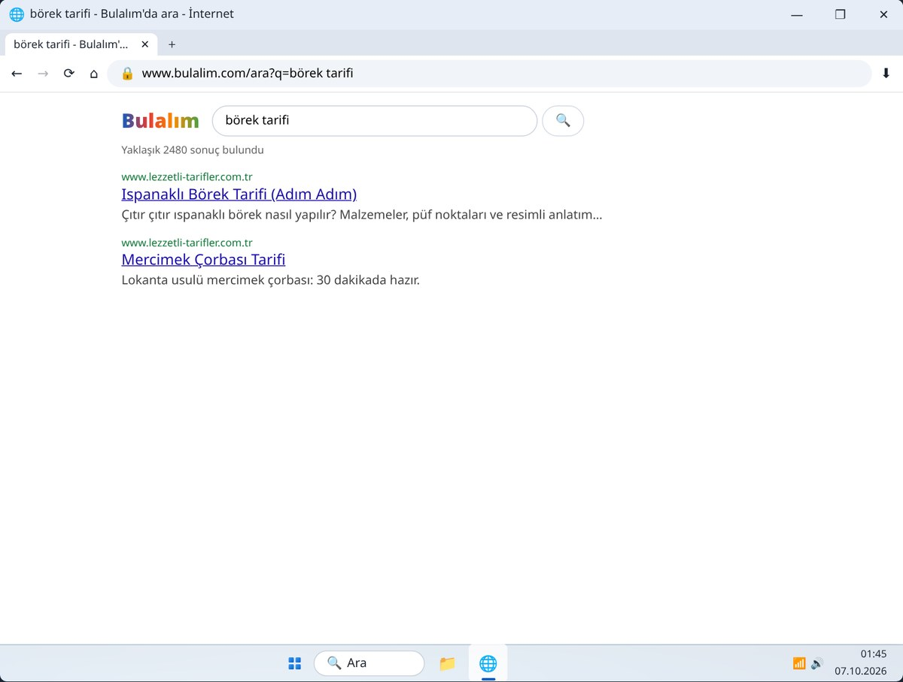
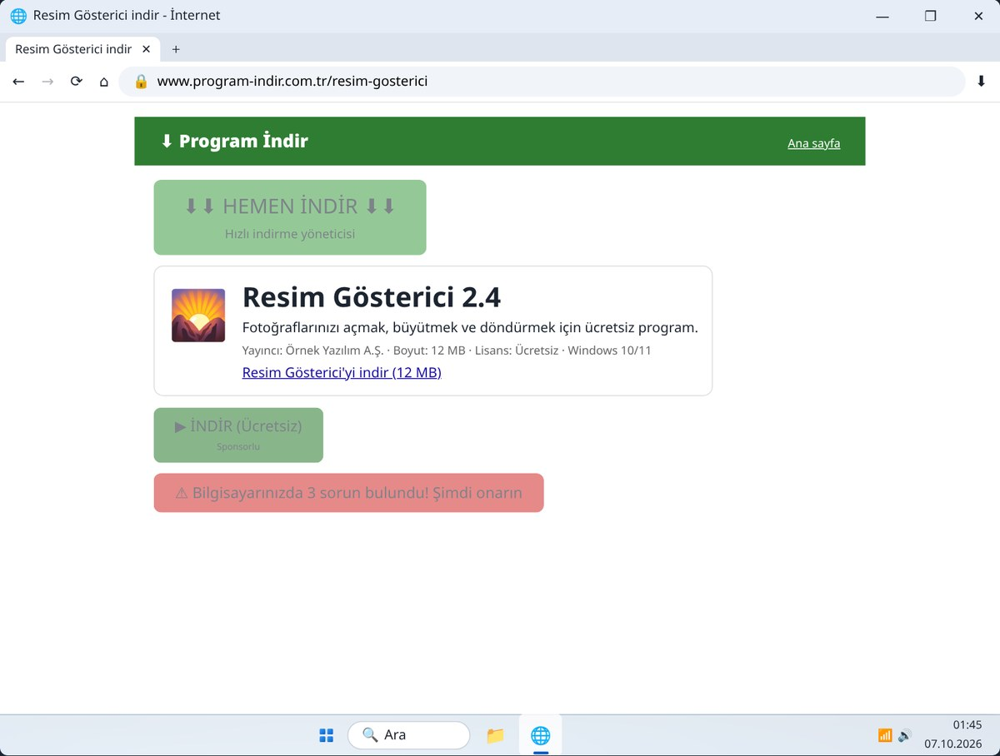
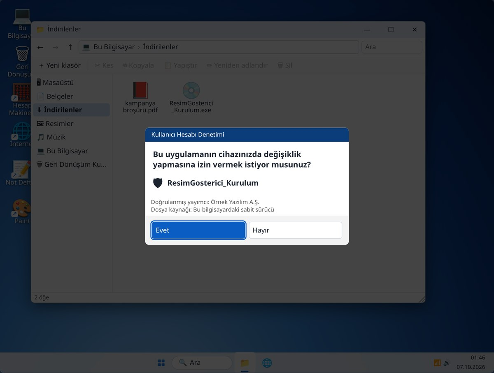
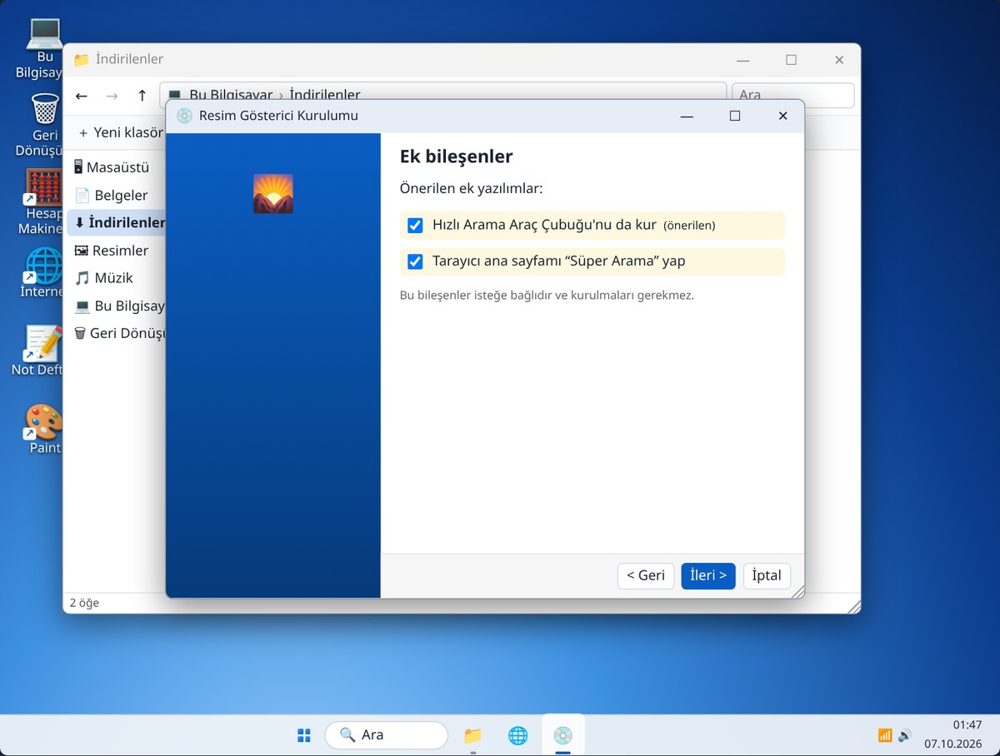
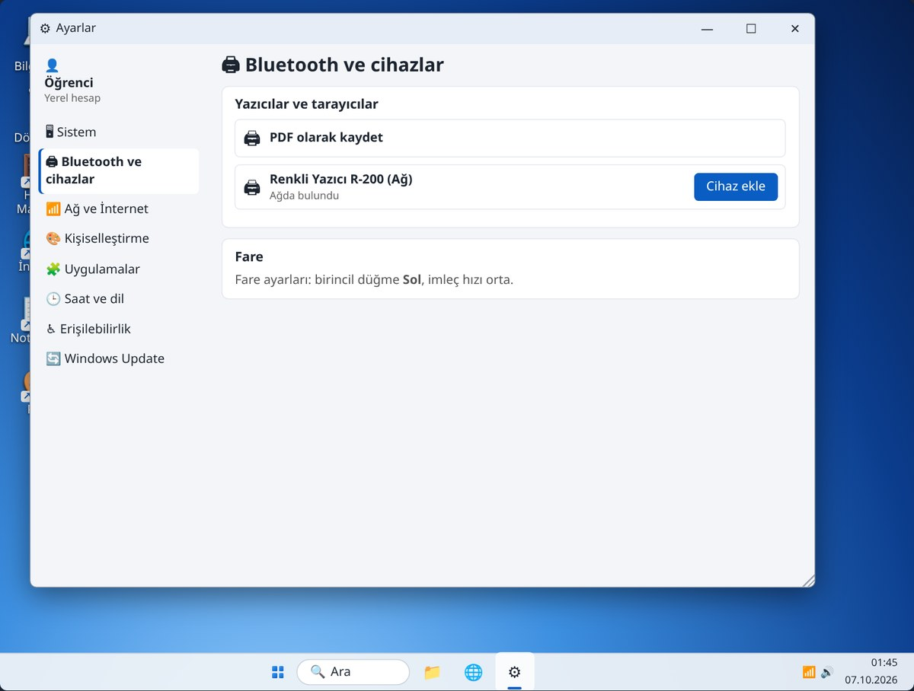
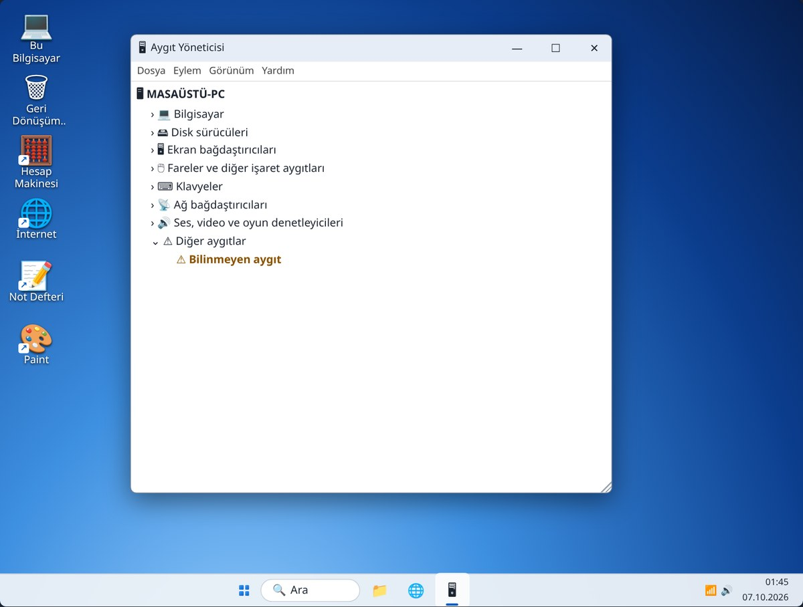
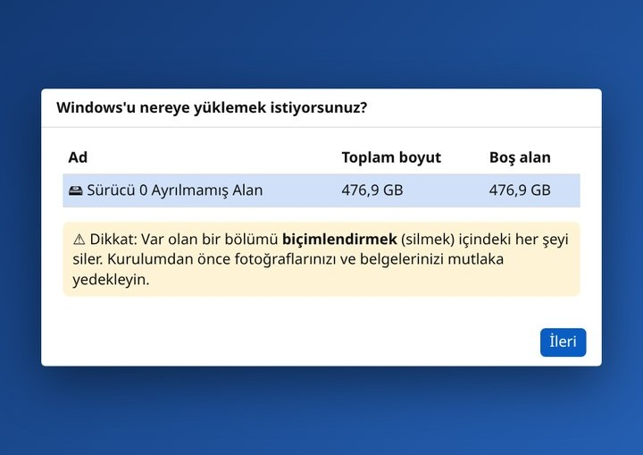

Bilgisayar İşletmenliği
8. Hafta: İnternet, program kurma, yazıcı, işletim sistemi
Alıştırmalar
Alıştırma bilgisayarında uygulamalı ders
Bu hafta
Dört ders, seksen beş dakika
| İnternette gezinme ve indirme | 25 dk | Arama, sekmeler, reklam tuzakları, dosya indirme |
|---|
| Program kurma ve kaldırma | 20 dk | İzin penceresi, lisans, ek yazılım tuzağı |
|---|
| Yazıcı ve sürücüler | 20 dk | Yazıcı ekleme, test sayfası, Aygıt Yöneticisi |
|---|
| İşletim sistemi kurulumu | 20 dk | Gösterim: Windows’un sıfırdan kurulumu |
|---|
Ders 1 · İnternet
Adres mi, arama mı?
- İnternete girmek için kullanılan programa tarayıcı denir.
- Adresi biliyorsanız adres çubuğuna yazın (www…).
- Bilmiyorsanız aradığınızı kelimelerle yazın: börek tarifi.
- ← bir önceki sayfa, ＋ yeni sekme, sekmedeki ✕ kapatır.
Sonuçların en üstünde Reklam yazanlar reklamdır.

Arama sonuçları: “börek tarifi”.Ders 1 · İnternet
İndirme ve reklam tuzakları
- Büyük, renkli, yanıp sönen “İNDİR” düğmeleri çoğunlukla reklamdır.
- Gerçek bağlantı, programın adının yazdığı sade bağlantıdır: “Resim Gösterici’yi indir (12 MB)”.
- En güvenlisi programı resmî sitesinden indirmektir.
- İndirdiğiniz her şey İndirilenler klasörüne gider.

Soluk yeşil ve kırmızı düğmeler reklamdır.Ders 2 · Program kurma
Kurulum adım adım

İzin penceresi: programı siz indirdiyseniz Evet; tanımıyorsanız Hayır.
Ek bileşenler tuzağı: iki kutucuğun da işaretini kaldırın.Ders 2 · Program kurma
Kurulum sırası ve kaldırma
| 1 | …Kurulum.exe dosyasına çift tıklayın, izin sorusuna Evet deyin. |
|---|
| 2 | Hoş geldiniz → İleri. Lisansı kabul ediyorum seçmeden İleri çalışmaz. |
|---|
| 3 | Kurulum yeri → İleri. “Önerilen” ek yazılımların işaretini kaldırın. Sonra Kur, Son. |
|---|
| 4 | Kaldırmak için: Başlat → Ayarlar → Uygulamalar → programın yanındaki Kaldır. |
|---|
Yalnızca güvendiğiniz yerden indirdiğiniz programları kurun.
Ders 3 · Yazıcı ve sürücüler
Yazıcı eklemek
- Sürücü (driver): parçanın bilgisayarla “konuşmasını” sağlayan küçük program. Bir tercüman gibi.
- Ayarlar → Bluetooth ve cihazlar → Cihaz ekle: yazıcı bulunur, sürücüsü kendiliğinden yüklenir.
- Test sayfası yazdırın. Not Defteri’nden yazdırmak için Ctrl + P.

Renkli Yazıcı R-200 bulundu.Ders 3 · Yazıcı ve sürücüler
Aygıt Yöneticisi
- Bir parça çalışmıyorsa: Başlat’a sağ tıklayın → Aygıt Yöneticisi.
- Sarı ünlemli aygıt, sürücüsünün eksik olduğunu gösterir.
- Sağ tık → Sürücüyü güncelleştir → Sürücüleri otomatik olarak ara.
- Başka yerler: Windows Update; üreticinin resmî sitesi. “Sürücü güncelleyici” programlarından uzak durun.

“Bilinmeyen aygıt”: sürücü eksik.Ders 4 · İşletim sistemi (gösterim)
Windows’u sıfırdan kurmak
- Kurulum diskteki fotoğrafları ve belgeleri silebilir. Önce mutlaka yedek alınır.
- Gerekenler: Windows kurulum USB’si; açılışta USB’den başlatmak (F12, F11 ya da Esc).
- Gerçekte kopyalama 15–30 dakika sürer; bilgisayar birkaç kez yeniden başlar. Kapatmayın!
- PIN: doğum yılınız ya da 1234 olmasın.

Disk seçimi: biçimlendirme her şeyi siler.Ders 4 · İşletim sistemi (gösterim)
Kurulum ekranları
| Dil ve klavye | Türkçe, Türkçe Q → İleri |
|---|
| Şimdi yükle | “Bilgisayarınızı onarın” bozuk Windows’u onarmak içindir |
|---|
| Ürün anahtarı | Daha önce etkinleştirilmişse Ürün anahtarım yok |
|---|
| Yükleme türü | Özel: Yalnızca Windows’u yükle (temiz kurulum) |
|---|
| Disk | Biçimlendirme her şeyi siler: uyarıyı okuyun |
|---|
| İlk ayarlar | Bölge, klavye, internet (EvAğı), ad, PIN, gizlilik |
|---|
Özet
Bu hafta öğrendiklerimiz
| Adres çubuğu | Adres biliniyorsa yazın; bilinmiyorsa kelimelerle arayın |
|---|
| “İNDİR” düğmeleri | Çoğunlukla reklam; programın adının yazdığı sade bağlantıyı kullanın |
|---|
| İzin penceresi | Siz indirdiyseniz Evet; tanımıyorsanız Hayır |
|---|
| Önerilen ek yazılımlar | İşaretlerini kaldırın |
|---|
| Sürücü | Parçanın bilgisayarla anlaşmasını sağlar; Aygıt Yöneticisi’nde sarı ünlem = eksik |
|---|
| İşletim sistemi kurulumu | Önce yedek! |
|---|